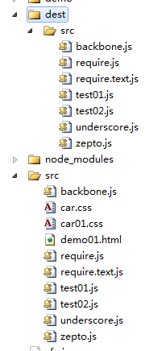
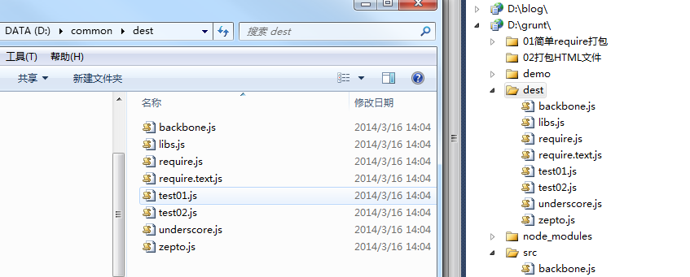
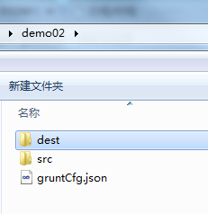

前言
经过前两次的学习，我们了解了grunt打包的一些基础知识，对于压缩几个文件有了初步认识
但是实际项目中的应用往往不是那么简单的，因为我们会有分支，我们也会有app版本Html5版本，更复杂的情况是我们有各个频道，而且各个频道是不同的团队在开发
那么统一的一套打包工具如何满足不同团队的需求呢？
然后，我们本地联调时候，仍然需要打包，但是打包的代码有些时候却不想要minify，这些功能都是实际项目重要用到的
我们这个时间化大力气学习grunt打包一块的知识是有绝对意义的，不然前端代码合并一块的难题仍然不可破，所以有心思在前端的朋友还是应该掌握一套前端自动化工具
我们继续几天的学习吧！！！
移动打包文件
其实，grunt本身具有这样的功能，但是我们实际项目重会出现这种可能：
我们核心框架会有一套压缩代码，并且会在对应目录生成文件用于发布，但是这个地方的权限对各个频道团队是不可见的
所以，我们在各个频道的公共文件夹内应该将刚刚的文件给复制过去，这块代码其实很简单，不需要任何新知识都能实现：
我们这里依旧采用昨天的require相关的代码，但是一有个不同的地方就是，我们要同时在D盘的common文件夹中生成该文件
这个代码其实比较简单，这里我们先介绍一个新的插件copy
grunt-contrib-copy
该插件用于复制文件到你想要的文件夹处
grunt.initConfig({ copy: { main: { flatten: true, src: 'src/*.js', dest: 'dest/' } } });
这段代码就会将src中的js文件搞到dest里面，并且新建src文件夹：
$ grunt copy Running "copy:main" (copy) task Copied 7 files

若是不想复制文件夹只要文件应该这样干：
grunt.initConfig({ copy: { main: { flatten: true, // filter: 'isFile', expand: true, src: 'src/**.js', dest: 'dest/' } } });
这块完了，我们就来移动打包文件至D盘了
移动打包文件
这个时候代码这样写就好（也许移动前我们还想将其文件夹里面的东西销毁，暂时不考虑了）
module.exports = function (grunt) { grunt.initConfig({ copy: { main: { // flatten: true, // expand: true, src: 'dest/**.js', dest: 'd:/common/' } } }); grunt.loadNpmTasks('grunt-contrib-copy'); grunt.loadNpmTasks('grunt-contrib-requirejs'); grunt.registerTask('build', 'require demo', function () { //第一步，读取配置信息 var cfg = grunt.file.readJSON('cfg.json'); cfg = cfg.requirejs; grunt.config.set('requirejs', { test: cfg }); //第二步，设置参数 grunt.log.debug('参数：' + JSON.stringify(grunt.config())); //第三步跑任务 grunt.task.run(['requirejs']); }); grunt.registerTask('default', 'test demo', ['build', 'copy']); }
Running "build" task Running "requirejs:test" (requirejs) task >> Tracing dependencies for: d:/grunt/dest/libs.js >> Uglifying file: d:/grunt/dest/libs.js >> d:/grunt/dest/libs.js >> ---------------- >> d:/grunt/src/zepto.js >> d:/grunt/src/underscore.js >> d:/grunt/src/backbone.js >> d:/grunt/src/test01.js >> d:/grunt/src/require.text.js >> text!src/demo01.html Running "copy:main" (copy) task Copied 8 files

关于移动相关的知识点暂时介绍到这里，我们进入下一话题
分支/频道处理
我们在实际项目重会遇到这种情况，我们一个主干分支上可能拉出很多分支完成不同的功能，而各个分支就有那么一点点不同，那么这个时候打包工具该怎么办呢？
我们一般是这样处理的：
① 首先全局只会有一个打包工具
② 其次每一个分支都会有一个gruntCfg.json的配置文件，存储相关的打包信息
③ 每次打包时候便把响应的分支打印到各自的dest目录里面
为了模拟这一情况我们将grunt打包相关的文件放到D盘的grunt目录里面，并在D盘新建gruntDemo目录
然后我们在gruntDemo中建立一个项目，并且为这个项目拉一个分支，比如现在项目是地demo01与demo02
现在文件结构如下：
D:\GRUNTDEMO
├─demo01
│ │ gruntCfg.json
│ │
│ └─src
│ backbone.js
│ require.js
│ require.text.js
│ test01.js
│ test02.js
│ underscore.js
│ zepto.js
│
└─demo02
│ gruntCfg.json
│
└─src
backbone.js
require.js
require.text.js
test01.js
test02.js
underscore.js
zepto.js
这个时候，要实现功能最好的方法就是写自定义任务了，其它方案不好使，这个时候起配置文件也需要有一定修改，比如其中的路径需要加入参数信息
{ "requirejs": { "options": { "baseUrl": "<%= config.srcDir %>", "paths": { "$": "src/zepto", "_": "src/underscore", "B": "src/backbone", "test": "src/test01", "text": "src/require.text" }, "include": [ "$", "_", "B", "test", "text!src/demo01.html" ], "out": "<%= config.destDir %>/libs.js" } } }
这个时候initConfig相关信息时候，首先得传入path依赖的文件目录，以及输出的文件目录
module.exports = function (grunt) { grunt.loadNpmTasks('grunt-contrib-requirejs'); //channel为频道名称，project为项目名称，这里对应gruntDemo，branch为其分支，默认与grunt目录为平行关系，佛则package.json里面应该有配置信息 grunt.registerTask('build', 'require demo', function (channel, project, branch) { var path = '../' + channel + '/' + project + branch; grunt.log.debug('path: ' + path); //第一步，读取配置信息 var cfg = grunt.file.readJSON(path + '/gruntCfg.json'); cfg = cfg.requirejs; grunt.config.set('config', { srcDir: path, destDir: path + '/dest' }); grunt.config.set('requirejs', { main: cfg }); //第二步，设置参数 grunt.log.debug('param: ' + JSON.stringify(grunt.config())); //第三步跑任务 grunt.task.run(['requirejs']); }); grunt.registerTask('default', 'test demo', ['build', 'copy']); }
于是我们第一步工作成功了：
$ grunt build:gruntDemo:demo:02 --debug Running "build:gruntDemo:demo:02" (build) task [D] Task source: d:\grunt\Gruntfile.js [D] path: ../gruntDemo/demo02 [D] param: {"config":{"srcDir":"../gruntDemo/demo02","destDir":"../gruntDemo/dem o02/dest"},"requirejs":{"main":{"options":{"baseUrl":"../gruntDemo/demo02","path s":{"$":"src/zepto","_":"src/underscore","B":"src/backbone","test":"src/test01", "text":"src/require.text"},"include":["$","_","B","test","text!src/demo01.html"] ,"out":"../gruntDemo/demo02/dest/libs.js"}}}} Running "requirejs:main" (requirejs) task [D] Task source: d:\grunt\node_modules\grunt-contrib-requirejs\tasks\requirejs.j s >> Tracing dependencies for: d:/gruntDemo/demo02/dest/libs.js >> Uglifying file: d:/gruntDemo/demo02/dest/libs.js >> d:/gruntDemo/demo02/dest/libs.js >> ---------------- >> d:/gruntDemo/demo02/src/zepto.js >> d:/gruntDemo/demo02/src/underscore.js >> d:/gruntDemo/demo02/src/backbone.js >> d:/gruntDemo/demo02/src/test01.js >> d:/gruntDemo/demo02/src/require.text.js >> text!src/demo01.html

如果改变一下任务命令呢：
grunt build:gruntDemo:demo:01 --debug
结果证明也是没有问题的，这个地方我就不贴出来了，各位自己去试试，我们分支处理一块暂时到这里
频道处理其实我们这里已经做了，第一个参数是频道，第二个参数是项目，第三个参数为分支，所以频道相关我们暂时就不说了
native与HTML5打包
最后让我们来看看如何打包native文件，native文件的打包其实与打包HTML5的方式类似，只不过我们这里需要一点点配置，让一个项目可以打包成不同的效果
仍然以上面demo01为例，他的配置文件可能就需要做一定调整：
{ "requirejs": { "options": { "baseUrl": "<%= config.srcDir %>", "paths": { "$": "src/zepto", "_": "src/underscore", "B": "src/backbone", "test": "src/test01", "text": "src/require.text" }, "web": { "include": [ "$", "_", "B", "test" ], "out": "<%= config.destDir %>/libs.js" }, "app": { "include": [ "$", "_", "B", "test", "text!src/demo01.html" ], "out": "<%= config.destDir %>/libs_app.js" } } } }
这里为了表现一点web与native的不同，我特意将web中少包含一个text文件，具体还得各位项目中去实践
如此一来，我们的代码需要做些许调整：
module.exports = function (grunt) { grunt.loadNpmTasks('grunt-contrib-requirejs'); //type 打包app包还是web包，channel为频道名称，project为项目名称，这里对应gruntDemo，branch为其分支，默认与grunt目录为平行关系，佛则package.json里面应该有配置信息 grunt.registerTask('build', 'require demo', function (type, channel, project, branch) { var path = '../' + channel + '/' + project + branch; grunt.log.debug('path: ' + path); //第一步，读取配置信息 var cfg = grunt.file.readJSON(path + '/gruntCfg.json'); cfg = cfg.requirejs.options; grunt.config.set('config', { srcDir: path, destDir: path + '/dest' }); grunt.log.debug('param: ' + JSON.stringify(cfg)); grunt.log.debug('param: ' + cfg[type]['include']); var taskCfg = {}; taskCfg.options = {}; taskCfg.options.baseUrl = cfg.baseUrl; taskCfg.options.paths = cfg.paths; taskCfg.options['include'] = cfg[type]['include']; taskCfg.options.out = cfg[type].out; grunt.config.set('requirejs', { main: taskCfg }); //第二步，设置参数 grunt.log.debug('param: ' + JSON.stringify(grunt.config())); //第三步跑任务 grunt.task.run(['requirejs']); }); grunt.registerTask('default', 'test demo', ['build', 'copy']); }
于是便可以运行了！！！
$ grunt build:app:gruntDemo:demo:01 --debug Running "build:app:gruntDemo:demo:01" (build) task [D] Task source: d:\grunt\Gruntfile.js [D] path: ../gruntDemo/demo01 [D] param: {"baseUrl":"<%= config.srcDir %>","paths":{"$":"src/zepto","_":"src/u nderscore","B":"src/backbone","test":"src/test01","text":"src/require.text"},"we b":{"include":["$","_","B","test"],"out":"<%= config.destDir %>/libs.js"},"app": {"include":["$","_","B","test","text!src/demo01.html"],"out":"<%= config.destDir %>/libs_app.js"}} [D] param: $,_,B,test,text!src/demo01.html [D] param: {"config":{"srcDir":"../gruntDemo/demo01","destDir":"../gruntDemo/dem o01/dest"},"requirejs":{"main":{"options":{"baseUrl":"../gruntDemo/demo01","path s":{"$":"src/zepto","_":"src/underscore","B":"src/backbone","test":"src/test01", "text":"src/require.text"},"include":["$","_","B","test","text!src/demo01.html"] ,"out":"../gruntDemo/demo01/dest/libs_app.js"}}}} Running "requirejs:main" (requirejs) task [D] Task source: d:\grunt\node_modules\grunt-contrib-requirejs\tasks\requirejs.j s >> Tracing dependencies for: d:/gruntDemo/demo01/dest/libs_app.js >> Uglifying file: d:/gruntDemo/demo01/dest/libs_app.js >> d:/gruntDemo/demo01/dest/libs_app.js >> ---------------- >> d:/gruntDemo/demo01/src/zepto.js >> d:/gruntDemo/demo01/src/underscore.js >> d:/gruntDemo/demo01/src/backbone.js >> d:/gruntDemo/demo01/src/test01.js >> d:/gruntDemo/demo01/src/require.text.js >> text!src/demo01.html
结语
我们这个星期花了三天时间一起学习了grunt打包相关的知识点，需要这些知识对您有用，搞这个东西还花费了不少心血呢！！！
若是文中有误请一并提出，后续若是这块有所得我们再一起总结吧